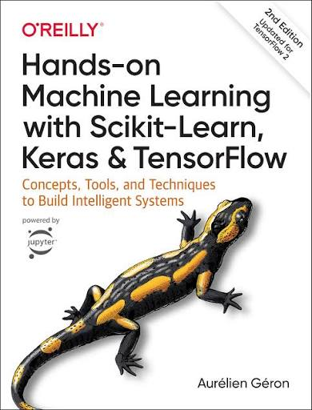

01MACHINE LEARNING
Hands-On Machine Learning
Tài liệu thực hành tốt để xây dựng nền tảng Machine Learning, từ preprocessing đến model evaluation.
Source: Open Library ↗06 / FAVORITE BOOKS
Những cuốn sách giúp mình hình thành tư duy của một developer, một người làm machine learning và một data analyst.

01MACHINE LEARNING
Tài liệu thực hành tốt để xây dựng nền tảng Machine Learning, từ preprocessing đến model evaluation.
Source: Open Library ↗ 02
02SOFTWARE CRAFT
Một cuốn sách hữu ích để hiểu cách tổ chức code rõ ràng, dễ bảo trì và có tính chuyên nghiệp.
Source: Open Library ↗ 03
03DEVELOPER MINDSET
Giúp hình thành tư duy của một software developer thay vì chỉ tập trung vào việc viết code.
Source: Open Library ↗ 04
04DATA ANALYSIS
Giúp biến dữ liệu thành câu chuyện rõ ràng, trực quan và có sức thuyết phục hơn khi trình bày insight.
Source: Open Library ↗READING NOTE
Đọc sách là cách mình học pattern trước khi bắt đầu xây dựng pattern mới.